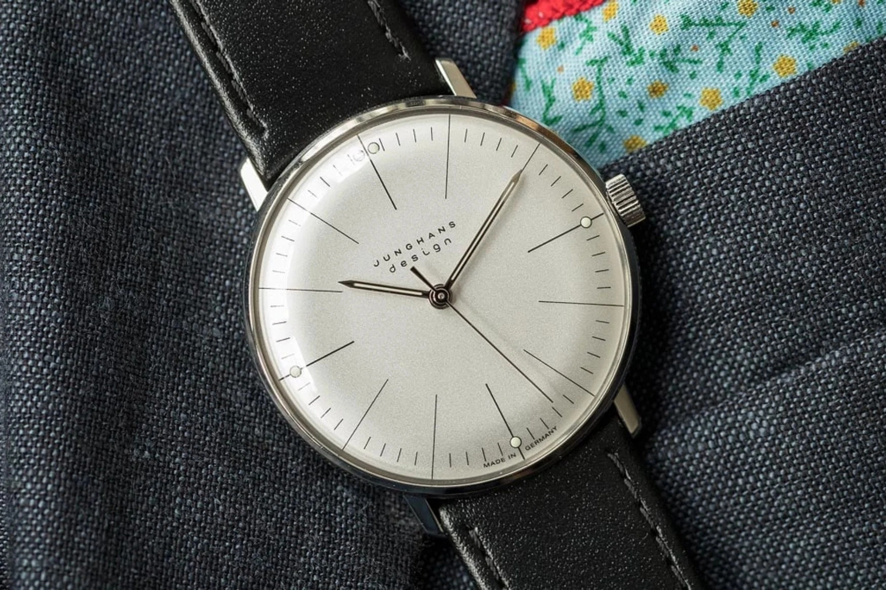
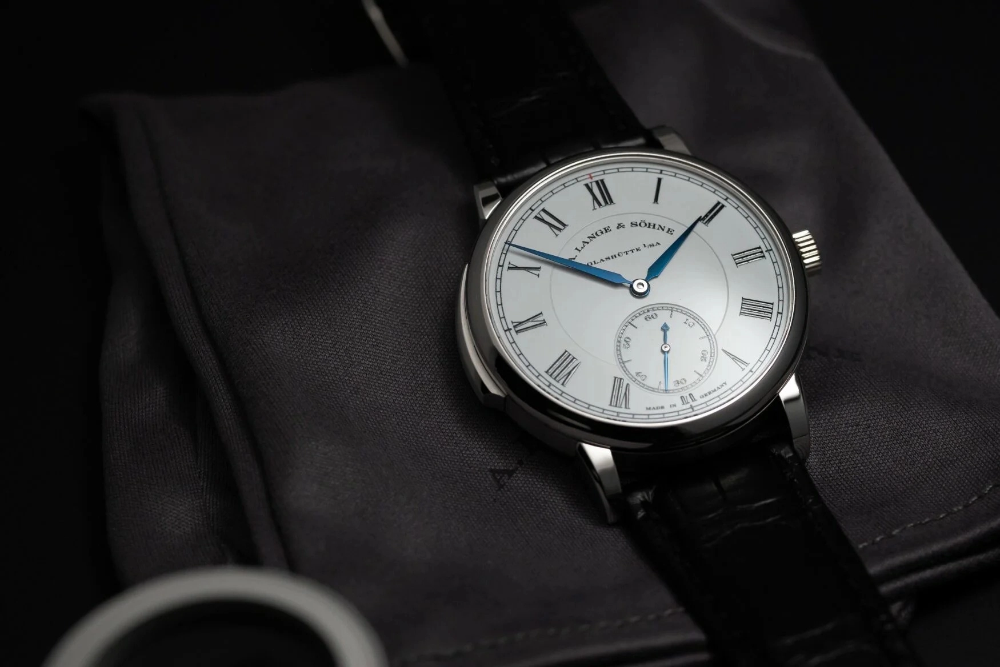
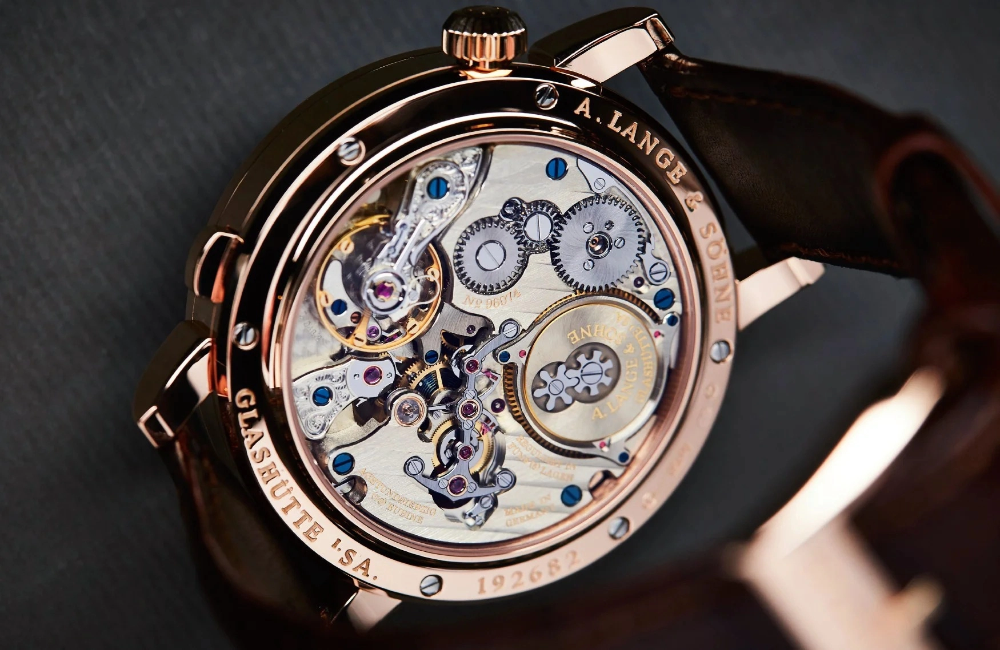
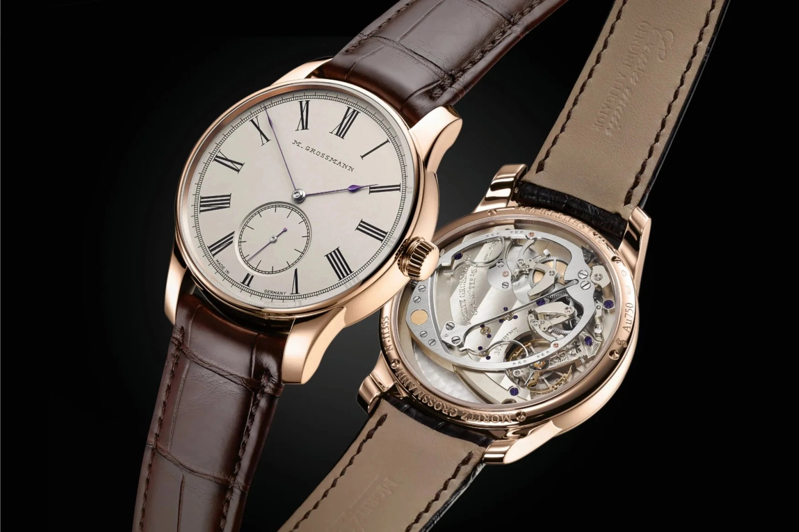
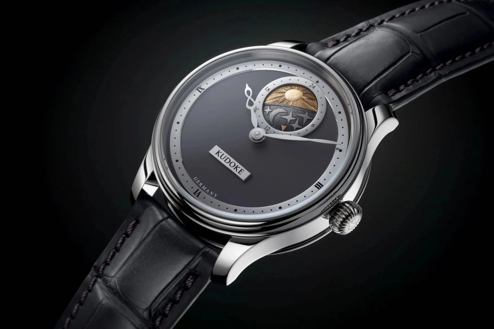

10 Thương hiệu đồng hồ tốt nhất đến từ nước Đức
Có một ưu điểm không thể chối cãi đó là chúng ta được tiếp cận với rất nhiều thông tin chất lượng kể từ ngày có internet. Kiến thức về thương hiệu đồng hồ quy mô nhỏ giờ không chỉ xuất hiện trong các cuộc trao đổi giữa những nhà sưu tập dày dặn kinh nghiệm nhất. Điều này có nghĩa là các thương hiệu ngày càng bước vào cuộc đua cạnh tranh gay gắt, như vậy đôi khi người tiêu dùng cũng có lợi. Càng có nhiều thương hiệu đồng hồ nằm ngoài Thụy Sĩ hơn. Một trong những trung tâm chế tạo đồng hồ khác có danh tiếng gần đây là Đức, một nơi mà bạn sẽ không tìm thấy những chiếc đồng hồ có mặt số bắt mắt. Lấy cảm hứng từ chủ nghĩa Bauhaus tối giản hay Teutonic sắc lẹm, những sản phẩm cơ khí đến từ Đức nhận đánh giá cao vì thường được chạm khắc và hoàn thiện thủ công. Dưới đây là 10 thương hiệu đến từ Đức nhận về đánh giá tích cực nhất từ người tiêu dùng
Junghans

Junghans đã có kinh nghiệm sản xuất hơn 160 năm, có nhiều thiết kế mang tính biểu tượng, và do đó, 1 trong 10 thương hiệu đồng hồ nổi tiếng nhất tại Đức buộc phải gọi tên Junghans. Các thiết kế Max Bill của Junghans dù là đồng hồ cơ bản, đồng hồ chronograph vẫn là biểu tượng nhất về trường phái Bauhaus cổ điển. Đến một tiệm Junghans, Max Bill Handaufzug nên là lựa chọn đầu tiên - một chiếc đồng hồ lên cót tay đơn giản, ổn định và đẹp mắt. Bên trong đồng hồ là bộ máy ETA đáng tin, trữ cót 42 giờ. Tuy nhiên, ở Junghans vẫn có một cái gì đấy táo bạo hơn, đó là 1972 FIS - một chiếc đồng hồ chronograph được thiết kế cho Giải vô địch Trượt tuyết Nordic World Ski Championships.
Nomos
Nếu bạn hoàn toàn đã biết đến ngành chế tạo đồng hồ của Đức, bạn sẽ quen tai khi Gia Bảo nhắc đến Nomos. Thương hiệu này thường được tiếp thị với biệt danh là bước đệm hoàn hảo cho nhiều tay chơi mới trong công cuộc trở thành nhà sưu tập thực thụ. Trong những năm gần đây, Tangente đã trở thành một thiết kế mẫu mực của Nomos. Thương hiệu cũng cung cấp dòng sản phẩm cao cấp. Lambda là minh chứng thể hiện khả năng chế tạo đồng hồ của thương hiệu.
Sinn

Nếu hai cái tên bên trên lấy phong cách tối giản để tạo nên một chiếc đồng hồ thì Sinn sẽ lấy trọng tâm là độ bền, tính chính xác, khả năng phục hồi để làm đồng hồ. Thương hiệu vùng Frankfurt đem đến cho người tiêu dùng những thiết kế đồng hồ siêu bền bỉ và cứng cáp như 104 hay U1 bên cạnh những thiết kế Classic và Frankfurt Financial District có phần tinh tế hơn.
Glashütte Original

Đến từ vùng đất Sachsen giàu kinh nghiệm về chế tạo đồng hồ, Glashütte Original là một thương hiệu đem đến nhiều chiếc đồng hồ chất lượng cho người tiêu dùng với mức giá hợp lý. Nguồn gốc của Glashütte Original bắt đầu từ những nhà chế tạo đã đặt tên cho nhiều nhà sản xuất khác, bao gồm FA Lange của A. Lange & Söhne và Moritz Grossman và thương hiệu cùng tên trước một thời kỳ hỗn loạn ở Đông Đức. Glashütte Original như chúng ta biết của ngày nay tái sinh vào năm 1994. Kể từ năm 2000, Glashütte Original nằm dưới tán ô bảo trợ của tập đoàn Swatch, chia sẻ nhiều tài nguyên của tập đoàn nhưng vẫn giữ lại nét thiết kế lịch sử, điển hình như trường hợp của mẫu Sixties Chronograph. Thương hiệu này cũng điều hành Trường Chế tạo Đồng hồ Alfred Helwig, được đặt theo tên của người phát minh ra tourbillon bay.
A. Lange & Söhne

Giống như nhiều nhà sản xuất đồng hồ khác từ Đức, quá trình sản xuất đồng hồ của A. Lange & Söhne chịu tác động mạnh từ các cuộc chiến tranh thế giới. A. Lange & Söhne ngừng sản xuất đồng hồ tinh xảo thay vào đó là tham gia vào chuỗi cung ứng quân sự. Đến những năm 1990, với sự giúp đỡ của Günter Blümlein của IWC và JLC, Walter Lange, chắt của người sáng lập, đã tái khởi động thương hiệu của gia đình. Đầu thiên niên kỷ, A. Lange & Söhne trở thành một phần của tập đoàn Richemont. Kể từ đó, A. Lange & Söhne đã tạo ra rất nhiều mẫu đồng hồ chất lượng, xứng đáng là biểu tượng như Lange 1 và Datograph.
Moritz Grossmann

Một thương hiệu rất cũ và được tái sinh lại với chất lượng cao phải có Moritz Grossmann. Nhà sản xuất đồng hồ có trụ sở tại Glashütte tập trung cao độ vào việc sản xuất những sản phẩm thủ công mỹ nghệ tốt nhất của Đức, như phương châm ban đầu, điều họ đã thực hiện từ thế kỷ 19.
Moritz Grossmann đã được hồi sinh vào năm 2010 và tạo ra nhiều thành công liên tục. Nhà sản xuất từ Đức tạo ra nhiều chiếc đồng hồ có chức năng phức tạp, bao gồm đồng hồ tourbillon, worldtimer nhưng Moritz Grossmann lại nổi tiếng trong giới vì tạo ra những mẫu đồng hồ được hoàn thiện thủ công một cách tuyệt vời. Ứng cử viên cho một chiếc đồng hồ Moritz Grossmann đẹp mắt là Tremblage với hệ thống lên cót độc đáo.
Kudoke
Stefan Kudoke là cái tên đầu tiên mà người chơi nên nghĩ đến ngay khi muốn thử sức với đồng hồ của một thương hiệu độc lập. Những người từng trải đánh giá mức độ hoàn thiện có trong đồng hồ Kudoke thực sự là phi lý ở mức giá khởi điểm là 8.630 USD cho Kudole 1, và chỉ nhỉnh hơn một chút cho Kudoke 2 Nocturne.
Với mức giá như vậy trong giới đồng hồ, người tiêu dùng chỉ có thể tiếp cận những chiếc đồng hồ có lớp hoàn thiện nhất cơ bản. Kết hợp với Habring, Kudoke đã tạo ra những bộ máy phức tạp.
D. Dornblüth & Sohn
Giống Moritz Grossmann, D. Dornblüth & Sohn tận dụng tối đa ngôn ngữ thiết kế về những chiếc đồng hồ chronometer hàng hải. Cho đến nay, các thương hiệu trong danh sách này có độ hiện diện cao, bao gồm cả D. Dornblüth & Sohn - tạo ra những tác phẩm đáng kinh ngạc.
Benzinger
Những người thợ đồng hồ từ Đức dường như luôn đam mê với kỹ thuật chạm khắc, và họ trở thành bậc thầy trong lĩnh vực đó. Benzinger đã tham gia vào quá trình sản xuất của nhiều thương hiệu trong ngành như IWC, Moritz Grossmann và Chronoswiss cho đến các thương hiệu ngoài ngành Rolls-Royce.
Phần lớn Benzinger sẽ thực hiện công việc dựa trên bộ máy Unitas từ Thuỵ Sỹ. Những chiếc đồng hồ Benzinger không hề tầm thường khi mức giá của các mẫu đồng hồ chỉ ngang với một chiếc Tudor hiện đại.
Lang & Heyne
Rất nổi tiếng tại vùng Dresden, Lang & Heyne là một thương hiệu quy mô nhỏ được thành lập bởi Marco Lang và Mirko Heyne vào năm 2001. Tác phẩm đầu tiên của bộ đôi đã có mặt tại triển lãm Basel một năm sau đó. Mặc dù sự hợp tác đầu tiên tạo ra thành công, nhưng cả hai lại đi theo con đường riêng. Heyne rời đi để gia nhập Nomos vào năm 2002, còn Lang tiếp tục thương hiệu cho đến năm 2019, trước khi rời đi để tạo ra các tác phẩm của riêng mình. Về sau, thương hiệu vẫn tiếp tục phát triển và tỏa sáng, ngay cả khi không có hai nhà sáng lập.
Nằm bên trong chiếc Albert là bộ máy Calibre IV (với một số nguồn cảm hứng từ Unitas) có chức năng chronograph một nút bấm, chỉ báo giây ở chính giữa. Mặt số men trắng của đồng hồ rất đẹp. Phía sau đồng hồ, có đủ những gì một “con ma men" đồng hồ Đức cảm thấy thích thú: đánh bóng đen, bề mặt mờ mịn, thép nung xanh, một chân kính bằng kim cương bên cạnh chân kính hồng,... Hơn cả, những cầu nối, tấm khung đỡ, dây tóc đều được Lang & Heyne chế tạo in-house.
Tuy nhiên, nếu có thể, nhiều người người còn muốn đeo đồng hồ ở mặt trái. Các chi tiết màu xanh tỏa sáng trên tấm nền đã được chải xước đều đặn, kỹ càng.